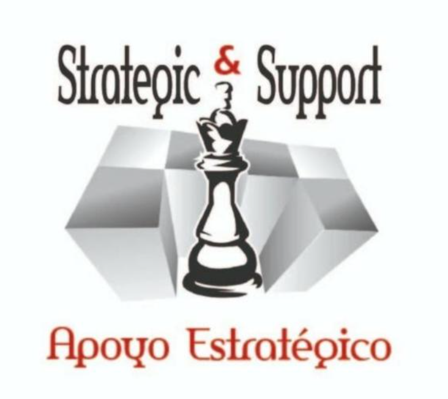

Infraestructura analítica en Power BI
Un modelo de datos sólido y tableros con los indicadores que mueven el negocio de tus clientes.

Propuesta de servicio
De la contabilidad de tus clientes y los Excel dispersos a un portal donde cada cliente ve su tablero y conversa con sus datos.
Un modelo de datos sólido y tableros con los indicadores que mueven el negocio de tus clientes.
Lo que hoy vive en Excel y Google Sheets pasa a un sistema simple, donde cada cliente carga su información en orden.
Para lograrlo hay tres retos. En la siguiente diapositiva ves cómo se conectan.
Tus clientes ya están en Contífico. Nos conectamos a su API en modo solo lectura, empresa por empresa, para llevar la contabilidad a Power BI sin digitar ni exportar nada.
Hoy la información complementaria vive en archivos sueltos y carpetas distintas. Construimos un sistema modular donde cada cliente entra con su usuario y carga sus datos con un mismo estándar.
Datos ordenados, listos para el tablero.
Unificamos todo en tu portal. Das acceso a cada cliente, uno por uno, a sus tableros, sin comprar licencias de Power BI por persona. Y con IA para conversar con sus datos.
Estudiar, entender y parametrizar la API del sistema contable.
Sistema modular en la nube para los datos que hoy están en Excel y Sheets.
alcance por definirDefinir los KPIs contigo y construir un solo tablero con la API y el sistema satélite.
Documentación técnica, manual de uso y diccionario de datos.
Acceso para cada cliente y chat con IA.
servicio mensualEstudiamos la API, entendemos sus datos y la dejamos parametrizada en Power BI, lista para alimentar los tableros.
Entregable: conexión funcionando en Power BI y un mapa claro de los datos que entrega la API.
| Actividad | Horas | Importe |
|---|---|---|
| Revisión de la documentación y pruebas de conexión | 4 | USD 60 |
| Exploración de los datos disponibles: contabilidad, ventas, compras, cobros, bancos y clientes | 4 | USD 60 |
| Parametrización de la conexión en Power BI: paginación, filtros de fecha y varias empresas | 6 | USD 90 |
| Total etapa 1 | 14 h | USD 210 |
Tarifa: USD 15 por hora.
Un sistema modular en la nube donde tus clientes ingresan su información con un estándar común. Su alcance depende de los Excel y Sheets que hoy se usan, así que lo cotizamos después de revisarlos juntos.
Se cotiza a USD 15 por hora después de la reunión de levantamiento.
Definimos contigo los indicadores clave y construimos un solo tablero con los datos de la API y del sistema satélite, completo desde la primera entrega.
Entregable: tablero en Power BI publicado, con estados financieros, cartera, ventas, bancos y datos satélite, y acceso por cliente.
| Actividad | Horas | Importe |
|---|---|---|
| Talleres de definición de KPIs con Gustavo y documento de requerimientos | 6 | USD 90 |
| Modelo de datos con ambas fuentes: contabilidad, documentos, clientes y datos satélite | 14 | USD 210 |
| Medidas e indicadores: estados financieros, cartera, ventas, bancos y datos satélite | 16 | USD 240 |
| Diseño y desarrollo de las páginas del tablero | 16 | USD 240 |
| Acceso por cliente (cada uno ve solo lo suyo) y pruebas | 6 | USD 90 |
| Validación de cifras contigo, publicación con actualización programada y ajustes | 6 | USD 90 |
| Total etapa 3 | 64 h | USD 960 |
Referencial: los indicadores de los datos satélite se confirman tras la reunión de levantamiento. Tarifa: USD 15 por hora.
Para que el tablero se entienda, se use bien y se pueda mantener.
Entregable: documentación técnica, diccionario de datos, manual de uso y una sesión de capacitación.
| Actividad | Horas | Importe |
|---|---|---|
| Documentación técnica del desarrollo | 6 | USD 90 |
| Diccionario de datos y catálogo de KPIs | 6 | USD 90 |
| Manual de uso del tablero | 4 | USD 60 |
| Sesión de capacitación | 2 | USD 30 |
| Total etapa 4 | 18 h | USD 270 |
Tarifa: USD 15 por hora.
Usuarios ilimitados: crea un acceso para cada uno de tus clientes. Tu analítica en Power BI crece y escala sin pagar licencias por persona ni por cliente.
El portal es un servicio de dataStudio: lo configuramos con tu licencia de Power BI en un entorno privado para Strategic & Support. Conoce más en datastudio.es/portal-bi.
| Etapa | Horas | Importe |
|---|---|---|
| 1. Conexión a la API | 14 | USD 210 |
| 2. Sistemas satélite | por definir | por definir |
| 3. Tablero unificado (referencial) | 64 | USD 960 |
| 4. Documentación | 18 | USD 270 |
| 5. Portal BI + IA | — | USD 60 al mes |
| Total desarrollo (sin etapa 2) | 96 h | USD 1440 |
No incluye la licencia de Power BI Pro, el costo que el proveedor del sistema contable cobre por habilitar la API (si aplica) ni el consumo del proveedor de IA.